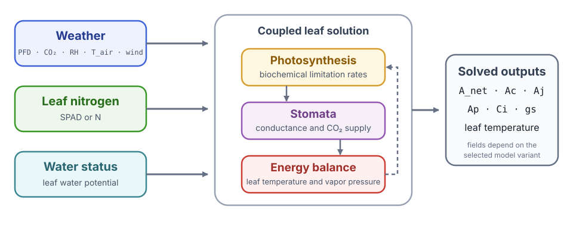
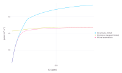
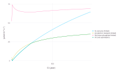
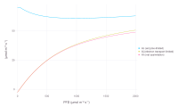
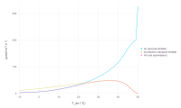
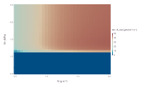
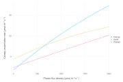

Leaf Gas Exchange
This case study uses LeafGasExchange.jl, a Cropbox model coupling C₃ or C₄ biochemistry, Ball–Berry or Medlyn stomatal conductance, and leaf energy balance. It demonstrates how to inspect an existing model and calculate response curves or grids without editing its equations.
The coupled formulation and its comparison of stomatal-conductance models are described in Coupled Gas-Exchange Model for C4 Leaves Comparing Stomatal Conductance Models (Plants, 2020). The article is the scientific starting point for this tutorial; the package is the executable implementation.
LeafGasExchange is not a dependency of the Cropbox documentation project. Run this tutorial in your own Julia environment. The commands are based on the package's current examples and Cropbox integration tests.
Install and load
using Pkg
Pkg.add("Cropbox")
Pkg.add("LeafGasExchange")
using Cropbox
using LeafGasExchangeThe main leaf-level combinations are:
| System | Photosynthesis | Stomata |
|---|---|---|
ModelC3BB | C₃ | Ball–Berry |
ModelC3MD | C₃ | Medlyn |
ModelC4BB | C₄ | Ball–Berry |
ModelC4MD | C₄ | Medlyn |
Canopy variants add C to the name, for example ModelC4MDC.
The model is easier to read if its variables are separated into inputs, solved states, and rates:
| Role | Variables | Meaning |
|---|---|---|
| environment | PFD, CO2, RH, T_air, wind | light, atmospheric CO₂, humidity, air temperature, and wind speed |
| leaf status | N, WP_leaf/Ψv | leaf nitrogen and leaf water potential |
| coupled solution | Ci, gs, T | intercellular CO₂, stomatal conductance, and leaf temperature |
| photosynthesis | Ac, Aj, Ap, A_net | biochemical limitation rates and resulting net assimilation |

Weather, leaf nitrogen, and water status enter a coupled solution. Changing stomatal conductance also changes internal CO₂ and leaf temperature, so the three process blocks cannot be diagnosed independently.
Code identifiers and mathematical symbols serve different purposes in this guide. For example, model variable Ap represents the C₃ limitation rate $A_p$, and Ci stores intercellular CO₂ concentration $C_i$. Identifiers remain monospace; symbols used to explain an equation are typeset as math.
The figures use the conventional short labels $A_c$, $A_j$, and $A_n$. They correspond to model variables Ac, Aj, and A_net; the implementation spells out net assimilation as A_net rather than defining a separate An field.
Ap belongs to the C₃ model. The C₄ model instead resolves carboxylation-side Ac from Rubisco and PEP sub-processes, together with electron-transport-limited Aj. The model solves Ci, gs, and leaf temperature together, so none of those outputs should be interpreted as an independent input.
Inspect the configuration surface
parameters(LeafGasExchange.ModelC4MD; alias = true)
parameters(LeafGasExchange.ModelC4MD;
alias = true,
recursive = true,
exclude = (Context,),
)The recursive list is long. Start with the nonrecursive surface, then inspect a specific component such as Weather, C4, StomataMedlyn, or Nitrogen.
look(LeafGasExchange.ModelC4MD)
look(LeafGasExchange.ModelC4MD, :A_net)Define one leaf environment
base = @config (
LeafGasExchange.Weather => (
PFD = 1500,
CO2 = 400,
RH = 60,
T_air = 30,
wind = 2.0,
),
LeafGasExchange.Nitrogen => (
SPAD = 60,
),
LeafGasExchange.StomataTuzet => (
sf = 2.3,
Ψf = -1.2,
),
)Plain numbers are interpreted in the units declared by each parameter. For a published analysis, record the parameter source and use explicit units wherever the input could be ambiguous.
Create an instance to check one condition before calculating a response curve:
s = instance(LeafGasExchange.ModelC4MD; config = base)
(A_net = s.A_net', Ci = s.Ci', gs = s.gs', T_leaf = s.T')If this fails, a response curve will fail too. Inspect environmental units and solver bounds first. If it succeeds, check that all four values are finite and biologically plausible before changing any biochemical parameter.
CO₂-response curve
An $A$–$C_i$ curve relates assimilation $A$ to intercellular CO₂ $C_i$. The test suite avoids zero atmospheric CO₂ because it does not bracket a useful coupled solution. Use a positive configured range.
co2 = LeafGasExchange.Weather => :CO2 => 10:10:1500
visualize(LeafGasExchange.ModelC4MD,
:Ci,
[:Ac, :Aj, :A_net];
config = base,
xstep = co2,
names = [
"Ac (enzyme-limited)",
"Aj (electron transport-limited)",
"An (net assimilation)",
],
kind = :line,
)
C₄ assimilation and its biochemical limitation rates across the configured CO₂ range. The horizontal axis is solved Ci, not configured atmospheric CO2.
xstep changes configured atmospheric CO₂ while Ci is plotted from the model solution. This distinction matters: the configured input and displayed x-axis need not be the same variable.
Read the curve from the limitation rates toward A_net. In the C₃ model, net assimilation $A_{net}$ follows the lowest active rate among $A_c$, $A_j$, and $A_p$, represented by Ac, Aj, and Ap. Rubisco limitation commonly dominates the lower-$C_i$ part, while electron transport or triose phosphate may limit the upper part. In the C₄ implementation, Ac combines the Rubisco- and PEP-carboxylation-side enzyme limits before it enters the smoothed minimum with Aj. The exact transition depends on the configuration, so the plot is a diagnostic rather than a rule that every parameter set must follow.
For C₃, include the triose-phosphate-limited rate Ap when available.
visualize(LeafGasExchange.ModelC3MD,
:Ci,
[:Ac, :Aj, :Ap, :A_net];
config = base,
xstep = co2,
names = [
"Ac (enzyme-limited)",
"Aj (electron transport-limited)",
"Ap (triose phosphate-limited)",
"An (net assimilation)",
],
kind = :line,
)
The C₃ variant adds the triose-phosphate-limited model variable Ap, corresponding to mathematical rate $A_p$.
Light and temperature responses
light = LeafGasExchange.Weather => :PFD => 0:20:2000
temperature = LeafGasExchange.Weather => :T_air => -10:1:50
visualize(LeafGasExchange.ModelC4MD,
:PFD, [:Ac, :Aj, :A_net];
config = base,
xstep = light,
names = [
"Ac (enzyme-limited)",
"Aj (electron transport-limited)",
"An (net assimilation)",
],
kind = :line,
)
visualize(LeafGasExchange.ModelC4MD,
:T_air, [:Ac, :Aj, :A_net];
config = base,
xstep = temperature,
names = [
"Ac (enzyme-limited)",
"Aj (electron transport-limited)",
"An (net assimilation)",
],
kind = :line,
)
The light response approaches another biochemical limitation as photon flux increases.

The broad temperature range is a boundary diagnostic. The extreme ends should not be interpreted as a validated biological extrapolation.
At low light, electron transport usually constrains assimilation; as light increases, another process may become limiting and the response flattens. A temperature response should be read together with solved leaf temperature T, because energy balance can make it differ from configured air temperature T_air.
Extreme temperatures are useful for testing but may expose parameterizations outside their fitted domain. A numerical result is not automatically a valid biological extrapolation.
Nitrogen × water response
Two configured dimensions produce a factorial response grid.
visualize(LeafGasExchange.ModelC4MD, :N, :Ψv, :A_net;
config = base,
xstep = LeafGasExchange.Nitrogen => :N => 0.5:0.05:2,
ystep = LeafGasExchange.StomataTuzet => :WP_leaf => -2:0.05:0,
xlim = (0.5, 2),
ylim = (-2, 0),
zlim = (0, 50),
zlab = "An / A_net",
kind = :heatmap,
)
Net assimilation over a factorial grid of leaf nitrogen and water potential. The lower nitrogen bound avoids the low-capacity solver failure seen near N = 0.1u"g/m^2" in this configuration.
The horizontal axis is model output N, while xstep changes the nitrogen parameter that determines it. Similarly, ystep changes WP_leaf and the model reports it as Ψv. More negative water potential should reduce the Tuzet stomatal factor; increased nitrogen raises biochemical capacity within the configured response.
The broad blue band below about -1.4u"MPa" is a calculated low-assimilation branch, not missing heatmap cells. With the default Medlyn intercept g0 = 0, severe water stress can drive gs to its zero lower bound; the coupled solution then gives A_net close to zero across the nitrogen range. The sharp boundary is specific to this model and configuration, not a universal physiological threshold. Recalculate individual points with instance and inspect fΨv, gs, Ci, and A_net before interpreting the transition.
This is a factorial configuration design: every nitrogen level is combined with every water-potential level. For further analysis, run simulate with explicit configurations and keep the resulting DataFrame instead of using the plotting shortcut. See Visualization for the complete xstep, ystep, and heatmap call forms.
Inspect coupled outputs
Photosynthesis alone is not enough to diagnose a coupled solution. Plot or collect at least:
A_net,Ac,Aj, andApwhere applicable;Ciand stomatal conductancegs;- leaf temperature
Tand vapor-pressure variables; - the environmental input actually varied.
A discontinuity in A_net may be biochemical, stomatal, energetic, or numerical. These companion outputs help separate those causes.
Canopy paths
Canopy systems contain nested sunlit and shaded gas-exchange components. String paths select their values.
canopy_config = @config(
base,
LeafGasExchange.Sun => (
d = 1,
h = 12,
),
LeafGasExchange.Canopy => (
LAI = 5,
),
LeafGasExchange.Radiation => (
leaf_angle_factor = 3,
leaf_angle = LeafGasExchange.horizontal,
),
)
visualize(LeafGasExchange.ModelC4MDC,
"weather.PFD",
[:A_net,
"sunlit_gasexchange.A_net_total",
"shaded_gasexchange.A_net_total"];
config = canopy_config,
xstep = light,
names = ["Canopy", "Sunlit", "Shaded"],
kind = :line,
)
Canopy assimilation is decomposed into leaf-area-weighted sunlit and shaded totals. At zero light, respiration keeps all three net rates below zero.
The canopy A_net is the sum of the sunlit and shaded _total values, each already weighted by its leaf-area index. By contrast, "sunlit_gasexchange.A_net" and "shaded_gasexchange.A_net" are rates per leaf area. Both forms are useful, but they answer different questions and should not be treated as an additive decomposition of the same quantity.
Use look on the model and a one-condition simulate(...; target="child.*") snapshot to discover paths, then replace wildcards with an explicit production layout.
Solver failures
When bisection reports a failure or a response grid contains gaps:
- reproduce the failing point with
instance; - check units and environmental ranges;
- verify that lower and upper bounds bracket the residual;
- inspect
Ci,gs, leaf temperature, and limitation rates; - reduce the configured range or step to locate the transition;
- compare with a trusted measurement or implementation.
Do not replace the model's established solver path solely for speed without domain-wide convergence and accuracy tests.
For details of instance, simulate, selectors, and configuration grids, see Simulation. General convergence questions are collected in Frequently Asked Questions.